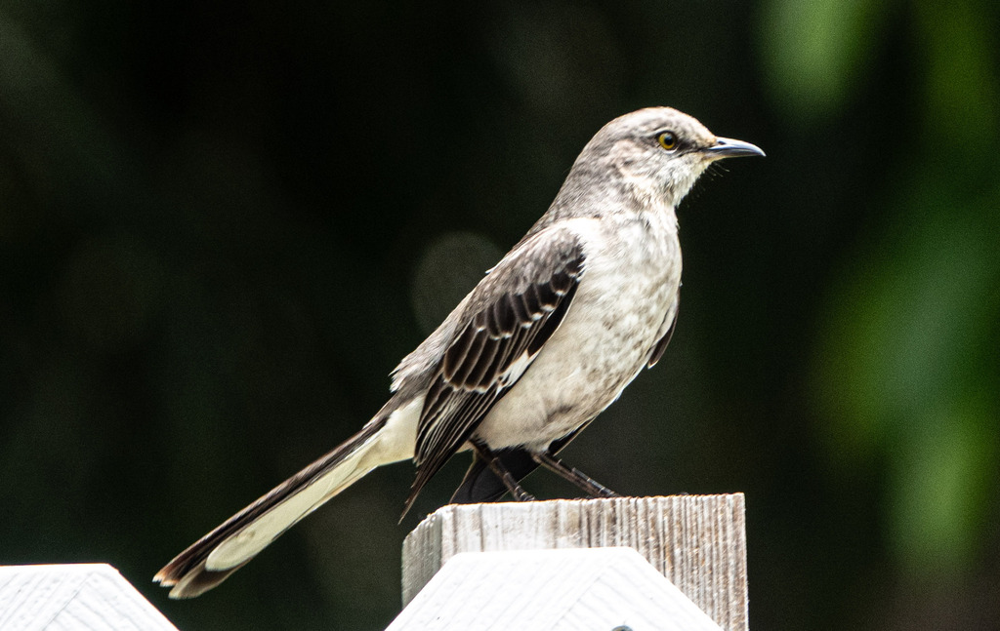

- A slim gray bird belting out one song after another from an exposed perch is almost certainly a northern mockingbird — Florida's state bird.
- The name is earned. A single mockingbird can learn and copy 200 or more sounds, stringing together imitations of other birds, frogs, and even car alarms.
- Unmated males sometimes sing through the night, which is why you might hear one performing under a streetlight at 2 a.m.
- It is fearless near the nest. A mockingbird will dive-bomb cats, hawks, and people many times its size to drive them away from its young.
Plain gray above, paler below, with two thin white wing bars.
Large white patches burst into view when it flies or flicks its wings open.
Long, with white outer feathers.
Sings from high, open perches and runs in short bursts across lawns.
The reason for the name — long, varied songs of repeated, imitated phrases, delivered by day and sometimes at night. Also a harsh "chack" scold note.
A slender gray bird with a long tail singing from a fence, wire, or treetop, flashing white wing patches when it flies. If it is reeling off many different songs in a row, that is the giveaway.
Insects and other small invertebrates in the warm months, shifting to fruits and berries in fall and winter. Often forages on open lawns.
Almost anywhere in the open parts of the park — singing from treetops and fence lines, or running across the lawns. Listen for a long, ever-changing song.
Year-round resident and one of the park's most reliable singers, vocal in every season and sometimes after dark in spring.
Watch and enjoy, and please do not feed park wildlife. If one is dive-bombing, you are simply near its nest — step away and it will settle.


- © Rob Carr (CC-BY-NC), via iNaturalist
- © jerseymeg (CC-BY-NC), via iNaturalist